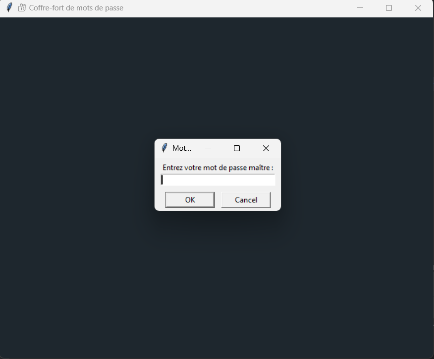
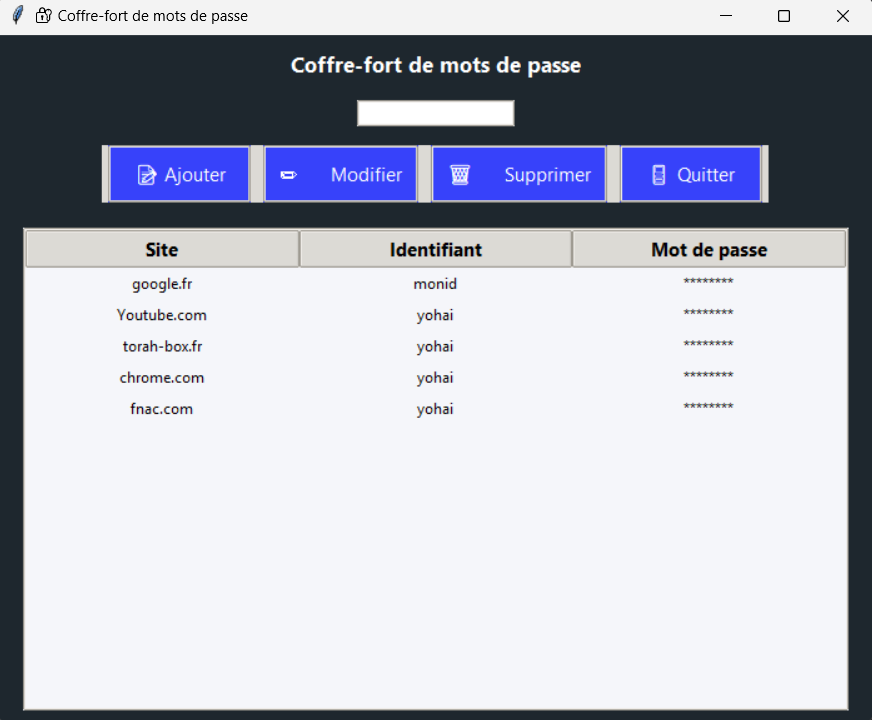
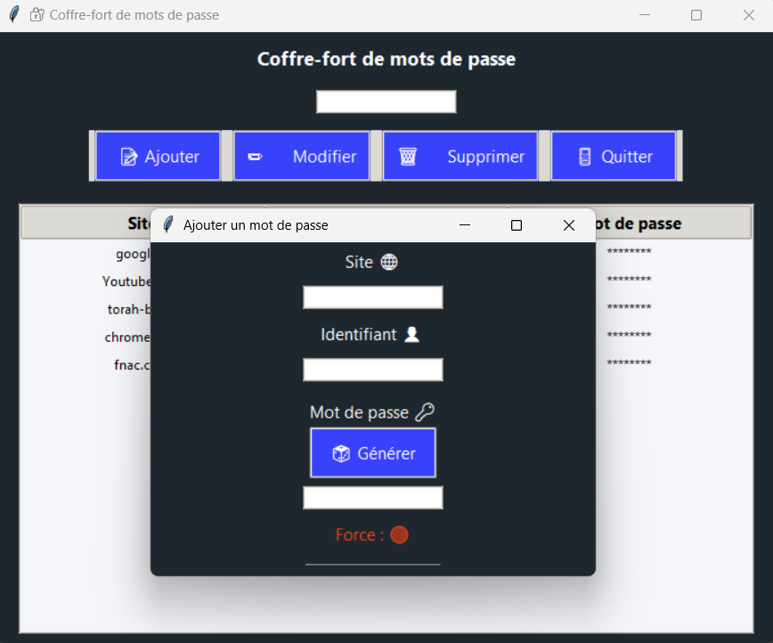
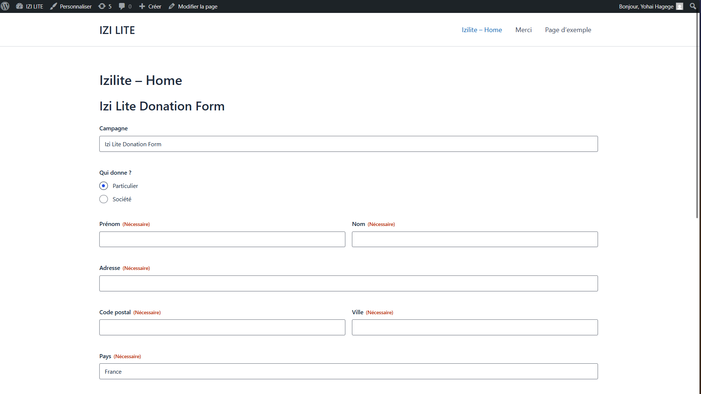
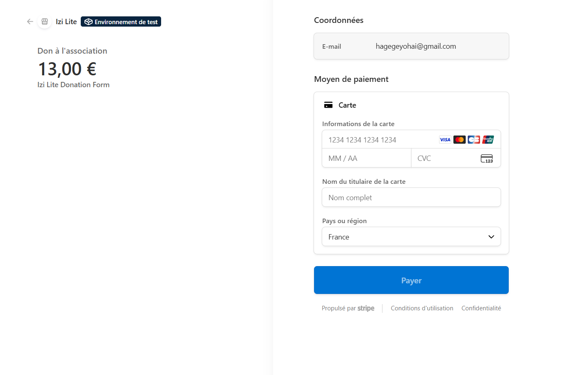

à propos de moi
Je m’appelle Yohaï Hagège et je suis étudiant en BTS SIO, option SLAM.
Ce portfolio a pour but de présenter mes réalisations, les compétences acquises et les projets auxquels
j’ai participé durant ma période de stage.
Le BTS SIO m’a permis d’approfondir mes connaissances en développement informatiques.
Vous trouverez dans ce document une synthèse de mes travaux, ainsi que des réflexions sur mon
apprentissage.
Enfin, je structurerai ce portfolio en plusieurs sections, abordant mon parcours, mes projets, mes
compétences techniques et mes expériences en entreprise.
Mon parcours
2022
Baccalauréat
Juin 2022
Obtention de mon baccalauréat spécialités Math et Physique-chimie
2023
Yéchiva
Aout 2022 - Aout 2024
Années d'étude talmudique à la yéchiva
2024
BTS SIO 1ʳᵉ année
Septembre 2024 - juillet 2025
Première année de BTS SIO option SLAM à l'ORT de Montreuil
en initial.
2025
BTS SIO 2ᵉ année
Septembre 2025 - juillet 2026
Deuxième année de BTS SIO option SLAM à l'ORT de Montreuil
en initial.
Mes projets
Mes compétences
Langages
HTML
Structure sémantique et accessible
CSS
Design responsive et animations modernes
Java
Programmation orientée objet
Python
Automatisation et développement web
PHP
Développement dynamique côté serveur
SQL
Conception de bases de données
Frameworks & Bibliothèques
Symfony
Framework PHP pour applications robustes
Flask
Framework Python léger pour APIs
Bootstrap
Framework CSS pour développement rapide
Outils & DevOps
WordPress
CMS et thèmes sur mesure
Docker
Containerisation d'applications
Git
Gestion de version et collaboration
Mes stages
Choisissez une année pour découvrir mes expériences
Stage première année
Ma Mission
Développement d'une application web avec Flask capable de stocker des identifiants de manière chiffrée. Le projet consiste à créer une application locale permettant de stocker des identifiants de manière chiffrée, en utilisant la cryptographie symétrique (AES), avec un accès protégé par mot de passe maître et un code clair et bien structuré.
Fonctionnement
Master Key : Saisie obligatoire, génération de clé AES (non stockée).
Ajout : Chiffrement instantané avant enregistrement local.
Affichage : Déchiffrement à la volée uniquement après authentification.
Défis
Face à de nouvelles librairies et une supervision limitée, j'ai appris à commenter le code et à résoudre des problèmes complexes d'implémentation cryptographique par moi-même.



Stage deuxième année
Ma Mission
Mettre en place une Pluggin de collecte de dons intégrée au site web de l'association, permettant de gérer les dons ponctuels et récurrents, de sécuriser les paiements, et d'automatiser l'émission des reçus fiscaux (CERFA) pour les particuliers et les entreprises.
Fonctionnement
Collecte des informations : à travers le gravity forms , collecte des informations du donateur
redirection vers Stripe : Après la collecte des informations, la redirection vers Stripe est effectuée.
Envoie du cerfa : Une fois le paiement effectué, le CERFA est envoyé au donateur.




Défis
Le premier défi a été la découverte de WordPress, un outil que je ne connaissais pas, ce qui a nécessité un temps d’apprentissage pour comprendre son fonctionnement.
Ensuite, j’ai dû concevoir le projet étape par étape afin d’organiser correctement le déroulement et assurer sa cohérence.
Enfin, l’intégration du système de paiement avec Stripe a été complexe : j’ai dû comprendre le fonctionnement des transactions et identifier les informations nécessaires pour que les paiements soient correctement traités. Je n'ai pas pu aller jusqu'au niveau de la génération des reçus fiscaux.
Contact